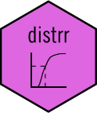

Weighted empirical cumulative distribution function (ecdf), conditional on one or more variables
Source:R/Fhat_conditional.R
Fhat_conditional_.RdWeighted empirical cumulative distribution function (ecdf), conditional on one or more variables
Arguments
- .data
a data frame
- .variables
a character vector with one or more column names
- x
character vector of length one, with the name of the numeric column whose conditional ecdf has to be estimated
- weights
character vector of length one, indicating the name of the positive numeric column of weights, which will be used in the estimation of the conditional ecdf
Value
a data frame, with the variables used to condition, the x variable, and columns wsum (aggregated sum of weights, based on unique values of x) and Fhat (the estimated conditional Fhat). In addition to data frame, the object will be of classes grouped_df, tbl_df and tbl (from package dplyr)
Examples
Fhat_conditional_(
mtcars,
.variables = c("vs", "am"),
x = "mpg",
weights = "cyl"
)
#> # A tibble: 28 × 6
#> # Groups: vs, am [4]
#> vs am mpg wsum wcum Fhat
#> <dbl> <dbl> <dbl> <dbl> <dbl> <dbl>
#> 1 0 0 10.4 16 16 0.167
#> 2 0 0 13.3 8 24 0.25
#> 3 0 0 14.3 8 32 0.333
#> 4 0 0 14.7 8 40 0.417
#> 5 0 0 15.2 16 56 0.583
#> 6 0 0 15.5 8 64 0.667
#> 7 0 0 16.4 8 72 0.75
#> 8 0 0 17.3 8 80 0.833
#> 9 0 0 18.7 8 88 0.917
#> 10 0 0 19.2 8 96 1
#> # ℹ 18 more rows